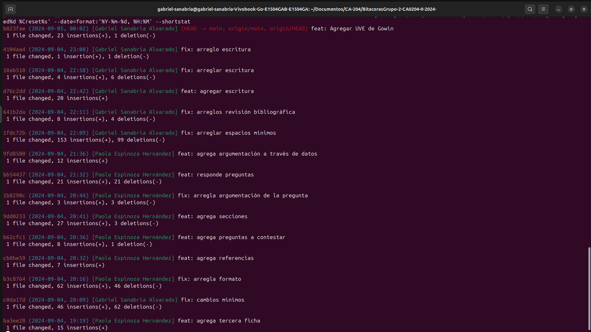
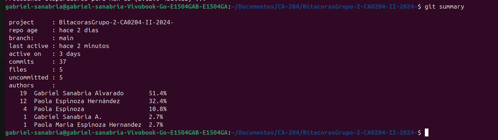

1 Bitácora 1
Energía del Futuro: Análisis Global de Tendencias e Indicadores en Energías Renovables
1.1 Comandos de Git


1.2 Planificación
1.2.1 Pregunta de Investigación
¿Qué cambios ambientales y socioeconómicos produce la instauración de la energía renovable en los países?
1.2.1.1 Definición de la idea
La idea inicial consiste en abordar la energía renovable, su producción, utilización, el intercambio que se da entre países; así como el impacto que la utilización de energías renovables puede tener sobre la sociedad como conjunto. Este tema resulta interesante, especialmente bajo el contexto actual, puesto que es usual pensar en las energías renovables para combatir el cambio climático; sin embargo, no es tan común escuchar del impacto social que esta produce, ejemplo de ello es el cambio en los paisajes que señala Requejo en el 2012, la posibilidad de alterar el abastecimiento energético que señalan Casola y Freier en el 2018, o los efectos económicos que plantean Caraballo y García en el 2017. Este trabajo pretende abordar no solo la parte de la energía como tal, sino su impacto en los países que la produce y utilizan. De esta manera, la idea se resume en: Considerar la producción de energías renovales en diversos países, y el impacto que esto tiene sobre ellos.
1.2.1.2 Conceptualización de la idea
Según la RAE, las definiciones de las palabras utilizadas en la idea son:
Considerar: Pensar, meditar, reflexionar algo con atención y cuidado.
Impacto: Huella o señal que deja.
Energía renovable: Energía que procede de un recurso presente en la naturaleza de manera prácticamente inagotable.
Prácticamente: Casi, por poco.
1.2.1.3 Identificación de tensiones
Las comparaciones entre países puede verse afectadas por el contexto del país, importación y exportación de energía, los recursos naturales y el tipo de energía renovable producida en cada país.
1.2.1.4 Reformulación de la idea en modo de pregunta
¿Qué impacto puede tener la energía renovable sobre la sociedad?
¿Qué cambios ambientales y socioeconómicos produce la instauración de la energía renovable en los países?
¿Cómo puedo comparar los países en materia de enegías renovables?
¿Puede la utilización de energías renovables garantizar un futuro sostenible?
¿Cuáles factores afectan la producción de energía renovable?
1.2.1.5 Argumentación de la pregunta
Pregunta: ¿Qué cambios ambientales y socioeconómicos produce la instauración de la energía renovable en los países?
Contraargumentos
-Ética: La inversión de energía renovable podría llegar a ser costosa, por lo que podrían salir perjudicados lo grupos más vulnerables.
-Lógica: Las energías renovables como lo son la energía solar y eólica pueden no estar disponible dependiendo de la zona donde estén instaladas.
-Emocional: La implementación de energías renovables podrían ser perjudiciales en tema de pérdida de empleo en compañías de electricidad tradicionales.
Argumentos
-Lógica:La energía producida con fuentes no renovables implica un riego a su propia sostenibilidad, además de la enorme contaminación que genera.
-Ética: A pesar de que la inversión de la instalación de energías renovables podría ser costosa, a largo plazo, las pérdidas que genería el hecho de no realizar la instalación son mayores en temas de salud ambiental y pública. La presente generación está moralmente obligada a un correcto manejo de los recursos naturales. El uso de fuentes no renovables perjudica y acelera los distintos cambios climáticos, los cuales pueden afectar gravemente a las futuras generaciones.
-Emocional: El uso de energías renovables puede provocar un mejoramiento en el estilo de vida de los próximos años en comparación a las expectativas del presente. Ocasionando que futuras familias y sociedades puedan tener un mejor desarrollo colectivo e individual.
-Conclusión: La importancia de las energías renovables van más allá de combatir el cambio climático y la contaminación ambiental, debido a que esto genera mejorías en el desarrollo socio-económico, además de un aumento en la salud pública internacional.
Pregunta: ¿Cuáles factores afectan la producción de energía renovable?
Contrargumentos
-Lógica: Hay un gran número de factores que afectan dicha producción, algunos difíciles de conseguir. No es posible contabilizar cada uno de estos factores, pues algunos, como la estacionalidad son variables.
-Ética: La distribución de las plantas generadoras de energía genera una brecha entre la capacidad de producción energética entre diversas poblaciones de una misma región.
-Emocional: La desinformación de los habitantes de una nación puede desincentivar la transición hacia las energías renovables, pues no habrán incentivos por parte de esta población a la inversión en investigación y desarrollo de mecanismos para generar energía renovable.
Argumentos
-Lógica: Si bien existen muchos factores que inciden en el nivel de producción de la energía, se pueden incluir varios de estos factores, en particular los que resulten más relevantes, como la temperatura promedio anual, cantidad de lluvia, irradiación solar, incidencia de desastres naturales, velocidad del viento, disponibilidd de biomasa, y potencial hídrico y geotérmico.
-Ética: Es posible recolectar datos que muestren la concentración de estas plantas, ajustar las mediciones con respecto a alguna otra variable, como la población o el nivel de industrialización.
-Emocional: Los programas de conscientización son una parte importante en la transición a las energías renovables; por lo tanto, esta puede ser tomada en cuenta para el análisis, así como la inversión en investigación y desarrollo.
-Conclusión: En la comparación entre países, se deben incorporar diversos factores que impacten a la producción de energía. Dichos factores incluyen los recursos naturales, el avance tecnológico, las políticas, las condiciones ambientales, la consciencia de la población y la tasa de industrialización.
Pregunta: ¿Cómo puedo comparar los países en materia de enegías renovables?
Contrargumentos
-Lógica: Para comparar los países, se deben tomar en cuenta las diferencias entre países, más allá de los montos nominales.
-Ética: No todos los países cuentan con la misma capacidad de inversión, ni el mismo nivel de vida. Comparar países sin incluir estos factores no resultaría en una buena comparación.
-Emocional: Las energías renovables suelen pasar desapercibidas ante los habitantes de las naciones, pues estos no se mantienen informados sobre el nivel de autosuficiencia energética que posee su país, ni la cantidad de energía exportada en lugar de utilizarse en el mismo.
Argumentos
-Lógica: Se pueden incorporar diversas variables al análisis con el fin de hacer una comparación más justa, incluyendo el GDP, del cual se podrá sacar el porcentaje destinado a inversión en investigación para la producción de energía renovable.
-Ética: Es posible incorporar variables sociales, que muestren la calidad de vida de las personas, y realizar un análisis sobre el impacto que la transición a la energía renovable representa en la vida de los habitantes.
-Emocional: Los datos sobre exportación e importación de energía son muy relevantes, espacialmente cuando se habla de autosuficiencia. Del mismo modo, la conscientización de la población es un factor que debe ser considerado en el análisis.
-Conclusión: Para comparar países en términos de energías renovables, es importante evaluar varios aspectos clave. Se debe considerar la energía generada y la consumida; la capacidad instalada, así como la producción anual. Además, se deben analizar las inversiones realizadas, los costos de instalación y mantenimiento, y las políticas gubernamentales que fomenten el uso de energías renovables.
Pregunta: ¿Puede la utilización de energías renovables garantizar un futuro sostenible?
Contrargumentos
-Lógica: Se necesitan más herramientas, especialmente a nivel global, para lograr un futuro sostenible, pues la energía renovable por sí misma, no es capaz de garantizar un futuro sostenible.
-Ética: El futuro sostenible no debería considerar únicamente las energías renovables, sino velar por un mundo mejor, con menores emisiones de gases de efecto invernadero, y un mayor desarrollo económico.
-Emocional: La energía renovable no es capaz de solucionar el problema; además, pone en peligro el abastecimiento energético de los países en transición.
Argumentos
-Lógica: Si bien la energía renovable por sí misma no va a garantizar un futuro sostenible, sí corresponde a una buena herramienta en este proceso. Además, al utilizar energía renovable, se está dando el primer paso hacia la meta del futuro sostenible.
-Ética: Es imperante en el contexto actual, analizar la relación entre el desarrollo económico y la energía renovable. Adicionalmente, la utilización de energía renovable puede representar el inicio de un camino hacia un futuro mejor, pues reduce las emisiones de CO2; también es necesario invertir en investigación para desarrollar maneras de crear un menor impacto ambiental.
-Emocional: La inversión en el desarrollo y mejoramiento de la producción de energías renovables puede solucionar muchos de los problemas derivados de esto. Existe además el concepto de autosuficiencia conectada, que puede ser de ayuda a los países en etapa de transición.
-Conclusión: La utilización de energías renovables es fundamental para un futuro sostenible al reducir emisiones de gases de efecto invernadero, diversificar la matriz energética y fomentar el desarrollo económico. Sin embargo, no garantiza la sostenibilidad por sí misma; puesto que algunas tecnologías poseen un impacto ambiental, y se necesita de políticas y regulaciones adecuadas. Así, las energías renovables son vitales para un futuro sostenible, pero deben unirse a otros esfuerzos.
1.2.1.6 Argumentación a través de datos
Fuente de información: Es una compilación de diversos indicadores sobre la energía renovable, incluyendo la producción, inversión y capacidad, así como factores socio-económicos y ambientales. Se encuentra disponible en kaggle.com, https://www.kaggle.com/datasets/anishvijay/global-renewable-energy-and-indicators-dataset
Contexto temporal y espacial de los datos: Los datos comprenden del 2000 al 2023, en los países de Australia, Brazil, Canadá, China, Francia, Alemania, India, Japón, Rusia y Estados Unidos. Al respecto, se destaca que los países destacan en cuanta al desarrollo. Por otro lado, los datos son bastante recientes, lo que aumenta el nivel de conscientización en el tema de la contaminación ambiental.
Facilidad de obtener la información: Compilación de datos, con el fin de ayudar al estudio de tendencias, impactos y estrategias relacionados a la implementación de la energía renovable. Población de estudio: Australia, Brazil, Canadá, China, Francia, Alemania, India, Japón, Rusia y Estados Unidos.
Muestra observada: Datos obtenidos sobre la población de Australia, Brazil, Canadá, China, Francia, Alemania, India, Japón, Rusia y Estados Unidos. Incluye indicadores sociales como la estabilidad política, el nivel educativo, el índice de percepción de la corrupción.
Unidad estadística: Australia, Brazil, Canadá, China, Francia, Alemania, India, Japón, Rusia y Estados Unidos.
Descripción de variables de la tabla: Se incluyen los países y los años, para realizar comparaciones no solo consigo mismos sino entre ellos. Los tipos de energía incluyen la solar, geotérmica, biomasa, eólica e hidroeléctrica; esos datos se utilizaran junto con la producción, la emisión de CO2, y la capacidad instalada, para tener una mejor comprensión acerca de la capacidad productiva, y realizar mejores comparaciones, entrelazando estos datos con la existencia de alianzas publico-privadas y de cooperación regional. Se realizaran análisis sobre la inversión, en búsqueda del impacto que esta pueda tener sobre las demás variables. La población se utilizará para comparar el GDP (Gross Domestic Product) y el consumo energético; el GDP es el valor final de todos los bienes y servicios producidos dentro de un país. La importación y exportación de energía se utilizará para analizar el nivel de autosuficiencia de los países. Aunado a ello, se enfatizará en la proporción de la energía que procede de fuentes renovables. Con respecto a la utilización de los recursos, se utilizarán los datos de temperatura promedio anual, cantidad de lluvia, irradiación solar, velocidad del viento, disponibilidd de biomasa, y potencial hídrico y geotérmico; así como la incidencia de desastres naturales en el año. De igual manera, se tomarán en cuenta la capacidad de almacenaje, si el mercado está o no liberalizado, la cantidad de patentes para energía renovable y la ayuda internacional para energía renovable. Para el análisis del impacto social, se consideran los precios de la electricidad, subsidios a energía, la consciencia de la población, la tasa de urbanización e industrialización, el nivel educativo, la existencia de programas de educación sobre la energía renovable, el índice de percepción de la corrupción y la calidad regulatoria (percepción de abilidad del gobierno para formular e implementar regulaciones que permitan el desarrollo de un sector). Se analizará el papel del gobierno en cuanto a si existen o no políticas públicas y programas de eficiencia energética, objetivos con respecto a la energía renovable, la existencia de acuerdos de trnsferencia energética, las tarifas al equipo para energía, los incentivos a la exportación de equipo, así como la inversión en investigación y desarrollo (R&D), el número de instituciones de investigación, el índice de innovación, el número de conferencias sobre energía y el número de publicaciones sobre dicha energía. Así mismo, se compará la estabilidad política, el índice de libertad económica, y la facilidad para hacer negocios. Por último, se buscarán tendencias en la fuerza de trabajo dedicda al sector de energía renovable.
1.2.2 Fichas de literatura
1.2.2.1 La autosuficiencia conectada
- Título: Energía Renovable: un nuevo principio de autosuficiencia conectada
- Autor: Juan Requejo Liberal
- Año: 2012
- Nombre del tema: El uso de energía renovable en el camino la autosuficiencia energética.
- Forma de organizarlo:
- Cronológico: Análisis hecho en 2012, de datos en la década pasada.
- Metodológico: Análisis descriptivo.
- Temático: Descripción de procesos en España, con intenciones de extenderlas al mundo.
- Teoría: El impacto de la energía renovable en la dinámica social
- Resumen en una oración: La utilización de energía renovable permite volver a la autosuficiencia, e implementar la autosuficiencia conectada.
- Argumento central: Los países deben optar por la autosuficiencia, y recurrir a fuentes energéticas externas solo para el restante.
- Problemas con el argumento o tema: La producción de energías renovables es mucho más visible que las otras, por lo que es necesario estudiar el espacio en el que se van a colocar. Además, existe un desequilibrio en la relación campo-ciudad en cuanto a la producción de energía renovable, pues es más complejo producir energía renovable en la zona urbana que en la rural; sin embargo, también se encuentran diferencias entre las zonas rurales con centrales eléctricas y las demás.
- Resumen en un párrafo: La energía renovable es una mejor opción ante el daño al medio ambiente; sin embargo, producirla es muy costoso y además, exige una detallada planificación. El sistema económico urbano-industrial creó un gran dessfase entre estos dos sectores, y llevó a un gran aumento de la población, y con ella, de la demanda de recursos. Basándose en el caso español, se expone que el uso de energía renovable representa el regreso a una sociedad consciente de las limitaciones existentes. Por ello, se propone la autosuficiencia conectada, un ciclo semiabierto en el que las regiones sean capaces de sustentar al menos la mayoría de su consumo energético, y tengan que recurrir a los recursos externos solamente para lo que no pudieron sustentar. De igual manera, se expresa que esta búsqueda de autosuficiencia puede ser aplicada a otros ámbitos.
1.2.2.2 El cambio climático y la energía renovable
Título: Renewable Energy as a Solution to Climate Change: Insights from a Comprehensive Study Across Nations.
Autor(es): Keshani Attanayake, Isuru Wickramage, Udul Samarasinghe, Yasangi Ranmini, Sandali Ehalapitiya, Ruwan Jayathilaka y Shanta Yapa
Año: 2023
Nombre del tema: Energía renovable como alternativa para la reducción de las emisiones de CO2 Impacto de las energías renovables en la reducción de emisiones de CO₂ a nivel global.
Formas de Organizarlo:
Cronológico: Datos analizados desde 1995 hasta 2021.
Metodológico: Regresión lineal, no lineal y regresión de panel para analizar la relación entre energía renovable y emisiones de CO₂.
Temático: Mitigación del cambio climático a través de la transición hacia energías renovables.
Teoría: Sostenibilidad energética y reducción de carbono.
Resumen de una oración: Análisis de implementación de energías renovables para reducir las emisiones de CO2 en diferentes países.
Argumento central: El cambio hacia las fuentes de energía renovable podría ser vital para amortiguar el impacto del cambio climático y disminuir las emisiones de CO2 a nivel global.
Problemas con el argumento o el tema: Puede ser un reto en los países de desarrollo en el momento de la transición energética, debido a la inversión inicial alta y la necesidad de implementación de políticas adecuadas.
Resumen de un párrafo: El estudio estudia cómo la instauración de energías renovables influye directamente en las emisiones de CO2 en 138 países durante el período de 1995 a 2021. Da uso a técnicas de regresión para valorar las relaciones lineales y no lineales entre las energías renovables y las emisiones de CO₂. El artículo recalca la importancia del cambio a energías limpias para minimizar las emisiones de carbono, pero reconoce que los países en desarrollo enfrentan desafíos significativos en términos de inversión y políticas. Finalmente, aporta recomendaciones para que los países implementen estrategias de transición energética de acuerdo con sus contextos únicos.
1.2.2.3 La energía renovable como estrategia para combatir el cambio climático en Brasil y Argentina
- Título: El nexo entre cambio climático y energía renovable en el Mercosur. Un análisis comparativo de las legislaciones de Argentina y Brasil
- Autores: Laura Casola y Alexander Freier
- Año: 2018
- Nombre del tema: Estrategias para la implementación de las energías renovables
- Forma de organizarlo:
- Cronológico: Se analizan los sucesos importantes desde 1992 hasta el 2016.
- Metodológico: Análisis descriptivo
- Temático: Análisis de los mecanismos de implementación de energías renovables.
- Teoría: Desarrollo sostenible por medio de la utilización de energías renovables
- Resumen en una oración: El desarrollo sustentable es clave para combatir el cambio climático.
- Argumento central: Para combatir el cambio climático, es necesario realizar cambios en las estructuras y la distribución de la energía, así como en la forma de producirla.
- Problemas con el argumento o tema: El desarrollo sustentable es un proceso demorado, y puede poner en riesgo el abastecimiento energético del país; por tanto, los países, aunque no por ello menos comprometidos con el desarrollo sostenible, tienden a prioriar el abastecimiento de energía.
- Resumen en un párrafo: Dado que la causa principal del cambio climático son los gases de efecto invernadero, entre los cuales destaca el CO2, derivado principalmente de la quema de fósiles; la implementación de energías renovables es fundamental para combatir este fenómeno. Aunque se reconoce la existencia y gravedad del fenómeno, así como la importancia de reducir la emisión de gases de efecto invernadero, la inversión en reservas de combustibles fósiles sobrepasa a la inversión en energías renovables. El artículo pretende facilitar la búsqueda de estándares que faciliten la implementación de energías renovables en otros países. Específicamente, se analiza la política adoptada por Brasil y Argentina, ambos miembros de Mercosur, quien promueve la producción y utilización de enrgías renovables. Los resultados indican que Brasil se enfocan en aspectos relacionados al cambio climático como la quema de bosques o la deforestación, sobre el abastecimiento energético. Por otro lado, Argentina procura mantener el abastecimiento y el desarrollo sustentable en una misma medida de importancia. No obstante, se prioriza en ambos países la seguridad energética nacional.
1.2.2.4 Energía eólica como sustituto de la energía producida por combustibles fósiles
- Título: Wind energy technology and current status: a review
- Autores: Thomas Ackermann y Lennart Söder
- Año: 2000
- Nombre del tema: Estado actual de la energía eólica
- Forma de organizarlo:
- Cronológico: Se analizan los sucesos importantes en la última década del siglo 20.
- Metodológico: Descriptiva
- Temático: Descripción de avances tecnológicos en la última década del siglo 20
- Teoría: Los avances en la producción de energía eólica y su posible impacto a futuro
- Resumen en una oración: La energía eólica podría ser un sustituto viable para los combustibles fósiles.
- Argumento central: Los avances tecnológicos en la generación de energía eólica, y la consecuente reducción de costos, posicionan a esta fuente energética como un buen competidor para los combustibles fósiles.
- Problemas con el argumento o tema: La disponibilidad de viento varía en cada región. El poder que se pueda generar depende de la velocidad del viento, que dista mucho de ser fija. Por último, la aceptación por parte del público, depende en gran medida de el impacto que producir la energía eólica tenga sobre el medioambiente. A poesar de ser una energía amigable con el medioambiente, puede generar contaminación sonora, o emisiones indirectas, es decir, energía no renovable utilizada para la producción o distribución de maquinaria para generar energías renovables.
- Resumen en un párrafo: En la última década del siglo XX, hubo un gran desarrollo de tecnología enfocada en la producción de energía eólica. Tanto es así que estudios del potencial de la energía eólica sugieren que esta podría competir con la generada por combustibles fósiles debido a su abundancia. Además, el costo de producir turbinas se ha reducido varias veces durante dicha década. El ruido ocasionado por las turbinas puede reducirse modificando algunos parámetros, como la velocidad a la que giran las turbinas o bien los materiales. Las emisiones indirectas se reducirán a medida que las energías renovables expandan su alcance, ya que esto causará una disminución en el uso de energías no renovables, especialmente para la fabricación o el transporte de maquinaria destinada a la producción de energías renovables. El crecimiento del mercado internacional impulsará el desarrollo de nuevas tecnologías, lo que reducirá aún más los costos de fabricación y llevará a la energía eólica a competir con la de combustibles fósiles.
1.2.2.5 Energía eólica: viabilidad en Costa Rica
- Título: Análisis de Viabilidad Ambiental del Uso de Energías Renovables en Costa Rica: Estudio de Caso de la Energía Eólica, la Hidroeléctrica y la Geotérmica
- Autor: Allan Cordero Gutiérrez
- Año: 2015
- Nombre del tema: Viabilidad de las energías renovables en Costa Rica
- Forma de organizarlo:
- Cronológico: Se analizan datos del siglo XXI, desde el 2007 hasta el 2015
- Metodológico: Análisis descriptivo y exploratorio
- Temático: Análisis de ventajas y desventajas de los tres tipos de energía renovable producida en Costa Rica.
- Teoría: Ventajas y desventajas del uso de energía renovable en Costa Rica
- Resumen en una oración: La energía eólica es una opción viable para que Costa Rica alcance la autosustentabilidad.
- Argumento central: La mayoría de la energía producida en Costa Rica es de fuentes renovables, sin embargo, para visualizar el futuro del país en producción energética, se debe abordar la viabilidad de sus instalaciones, así como el impacto que estas tienen sobre el medioambiente y la sociedad costarricense. Varias de las instalaciones dedicadas a generar energía renovable resultan un atractivo turístico, lo que potencia el desarrollo económico del país.
- Problemas con el argumento o tema: A pesar de sus logros en la producción de energías renovables, hay rezagos en la utilización de los hidrocarburos importados. A nivel mundial, existe todavía una gran dependencia a fuentes energéticas no renovables, lo que dificulta el camino hacia la eliminación de emisiones, así como a la compensación de las emitidas por los demás países. En cuanto a la viabilidad de las energías renovables, la energía hidráulica, geotérmica y eólica puede tener impactos negativos en el medioambiente.
- Resumen en un párrafo: Con el objetivo de reducir el uso de combustibles fósiles y alcanzar la soberanía energética, Costa Rica inició su proceso hacia un modelo de desarrollo autosostenible. La energía hidráulica causa deforestación y obstaculiza el camino de los peces, lo que la descarta como una solución viable a largo plazo. La energía eólica, a pesar de la posibilidad de afectar la calidad de vida de las aves y modificar, aunque muy levemente, la fuerza o dirección del viento, destaca como una opción viable en Costa Rica. Esta energía permite la eliminación de emisiones de gases de efecto invernadero y contribuye a la independencia energética. Por ello, determinar la ubicación de los parques eólicos se ha vuelto una prioridad para las autoridades a cargo.
1.2.2.6 Producción e inversión en energías renovables, 2021
- Título: Renewable Energy Statistics
- Autor: IRENA
- Año: 2021
- Nombre del tema: Renewable Energy Statistics 2021
- Forma de organizarlo:
- Cronológico: Datos desde el 2011 hasta el 2020
- Metodológico: Análisis de datos
- Temático: Análisis de datos obtenidos de diversas fuentes, para detectar patrones relacionados al uso de energía renovable.
- Teoría: Cambios en la producción de diversos tipos de energía renovable
- Resumen en una oración: La producción de energía renovable creció en 2019, pero la inversión pública ha disminuido.
- Argumento central: La producción de energías renovables va en aumento, aumentando así la proporción de energías renovables sobre el total de energías.
- Problemas con el argumento o tema: La inversión está disminuyendo, lo que puede dificultar el desarrollo de nuevas tecnologías que permitan seguir esta tendencia.
- Resumen en un párrafo: La producción de energía renovable creció de 2018 a 2019, destacando especialmente la energía solar y eólica. Sin embargo, el crecimiento de la energía solar fue menor en comparación con el año anterior. Asia lidera el incremento en la producción, consolidándose como el continente que más energía renovable genera a nivel mundial. Este aumento en la producción también ha elevado la proporción de energía total correspondiente a fuentes renovables. No obstante, la inversión pública en todas las energías renovables ha experimentado una disminución.
1.2.2.8 ¿Qué es la energía renovable?
Título: “¿Qué es la energía renovable?”
Autor: Las Naciones Unidas.
Año: 2020.
Nombre del tema: ¿Qué son las energías renovables?
Formas de organizarlo:
Cronológico: El presente documento fue originado en el 2020.
Metodológico: El autor no recalca algún método en específico para resolver el tema, no obstante, el enfoque del texto se basa en la descripción y comparación de las distintas fuentes de energías renovables.
Temático: Análisis descriptivo-comparativo.
Teoría: Transición energética de un desarrollo sostenible.
Resumen en una oración: Las energías renovables son fuentes naturales como el sol y el viento que se reponen rápidamente y juegan un papel crucial en la lucha contra el cambio climático.
Argumento central: Las energías renovables representan una alternativa esencial a los combustibles fósiles, reduciendo las emisiones de gases de efecto invernadero y creando empleos, siendo una herramienta clave para mitigar la crisis climática.
Problemas con el argumento o el tema: A pesar de su abundancia, algunas fuentes de energía renovable dependen de factores climáticos y geográficos, y su infraestructura puede tener impactos ecológicos, como en el caso de la energía hidroeléctrica o la bioenergía.
Resumen en un párrafo: Las energías renovables se obtienen de fuentes naturales que se restablece rápidamente. A diferencia de los combustibles fósiles, que liberan grandes cantidades de dióxido de carbono y otros gases de efecto invernadero, las energías renovables son más limpias. No obstante, las fuentes tienen distintas dificultades, tales como la ubicación geográfica de las fuentes de energía e impactos ecológicos de algunas tecnologías, como la hidroeléctrica. Aun así, las energías renovables son más baratas y crean más empleos que los combustibles fósiles, lo que las convierte en una pieza clave para combatir el cambio climático y mejorar la sostenibilidad internacional.
1.2.2.9 Fuentes de energía, renovables y no renovables. Aplicaciones.
Título: “Fuentes de energía, renovables y no renovables. Aplicaciones.”
Autores: Vega de Kuyper, J.C. & Ramírez Morales, S.
Año: 2014.
Nombre del tema: Aplicaciones de la Energía renovable.
Formas de organizarlo:
Cronológico: El texto se centra en la evolución de las distintas fuentes de energía y su contexto en Latinoamérica, enfatizando en el desarrollo de energías renovables en las últimas décadas. La preocupación por la sostenibilidad y el cambio climático ha impulsado el interés por las energías renovables desde la década de 1970 .
Metodológico: Análisis descriptivo a base de fundamentos técnicos y matemáticos sobre generación de energía y eficiencia energética, empleando herramientas de termodinámica, electroquímica, y diseño de sistemas energéticos.
Temático: Energías renovables y no renovables, eficiencia energética, contexto latinoamericano en el uso y desarrollo de fuentes energéticas.
Teoría: Transición energética hacia un desarrollo sostenible y la mitigación de los efectos del cambio climático.
Resumen de un párrafo: Este documento realiza una comparación entre energías renovables y no renovables, explicando sus características, aplicaciones y efectos.
Argumentos central: Resalta la vitalidad de las energías renovables frente a las no renovables, examinando su impacto en el medio ambiente, su sostenibilidad y sus aplicaciones, mientras que las energías no renovables, aunque más utilizadas, son finitas y dañinas para el medio ambiente
Problemas con el argumento o el tema: La dependencia geográfica y climática de las energías renovables puede limitar su instauración, mientras que la infraestructura para energías no renovables sigue siendo predominante, a pesar de sus efectos negativos en el medio ambiente.
Resumen en un párrafo: El documento se basa en mostrar una visión integral sobre las fuentes de energía renovables y no renovables, explorando su relevancia y aplicaciones en América Latina, especialmente en países como México, Argentina, Chile y Colombia. Con un enfoque pedagógico, los autores proporcionan un equilibrio entre teoría y práctica, explicando los principios de generación y almacenamiento de energía, además de introducir el concepto de eficiencia energética como una herramienta clave para el futuro. Se presentan ejemplos actualizados de proyectos de energías renovables en la región, incluyendo energías como la solar o la geotérmica, así como un análisis de las barreras y oportunidades para su implementación.
1.2.2.10 Hacia un futuro con energía limpia y renovable
Título: “Hacia un futuro con energía limpia y renovable”
Autores: Serrano, Javier.
Año: 2022.
Nombre del tema: Actualidad Económica; Madrid.
Formas de organizarlo:
Cronológico: El documento fue elaborado en Madrid, España, en el año 2022.
Metodológico: La compañía ZGR utilizó distintos enfoques y tecnologías para resolver problemas de transición energética y la electrificación, tales como Electrizadores para la producción de hidrógeno verde, ciberseguridad para la protección de redes inteligentes, redes inteligentes con algoritmos predictivos e inteligencia artificial, fusión nuclear como tecnología futura clave para la generación de energía limpia y autoconsumo energético y comunidades energéticas como soluciones para la eficiencia energética.
Temático: El documento podría tener una temática dirigida a la transición energética y la electrificación sostenible.
Teoría: Transformación tecnológica y transición energética global.
Resumen de una oración: el documento aborda temas como la transición energética global hacia fuentes como el hidrógeno verde y la electrificación, la cuales son muchos más sostenibles, mencionando la importancia del papel de la ciberseguridad y la planificación de este proceso.
Tema central: electrificación mediante energías emergentes.
Problemas con el argumento o el tema: El documento destaca la viabilidad de la transición de energía global a fuentes renovables como el hidrógeno verde, no obstante, el documento no toma en cuenta temas como la viabilidad económica a corto plazo de la instalación de dichas energías. Su implementación lleva a cabo grandes gastos monetarios difíciles de financiar bajo el contexto global actual.
Resumen de un párrafo: El documento habla sobre la relevancia del papel de la electrificación en el futuro tecnológico, encabezado por avances como la inteligencia artificial, robótica y computación. Íñigo Segura, director de ZGR, afirma que el reto principal es la maximización del uso de la electricidad mientras se minimiza la dependencia de combustibles fósiles. Las tecnologías como el hidrógeno verde y la fusión nuclear se direccionan como soluciones clave para alcanzar la neutralidad de carbono, aunque aún enfrentan desafíos en cuanto a costos y escalabilidad. También se plantea la necesidad de algunas mejoras en la ciberseguridad en las redes eléctricas por su creciente conectividad y complejidad. La planificación a largo plazo es vital, ya que imprevistos globales pueden desestabilizar la transición energética y la disponibilidad de materias primas estratégicas.
1.2.2.11 Energías renovables y desarrollo económico: Un análisis para España y las grandes economías europeas
- Título: Energías renovables y desarrollo económico: Un análisis para España y las grandes economías europeas
- Autores: María Ángeles Caraballo Pou, Juana María García Simón.
- Año: 2017.
- Nombre del tema: Relación entre energías renovables y desarrollo económico en Europa.
- Forma de organizarlo:
- Cronológico: Crea un análisis el período 1980-2010.
- Metodológico: Técnicas de cointegración.
- Temático: Economía de desarrollo y energía.
- Teoría: Sostenibilidad y crecimiento económico.
- Resumen en una oración: El artículo estudia cómo el uso de energías renovables afecta el crecimiento y desarrollo económico.
- Argumento central: Examina si la sustitución de energías no renovables puede sostener el desarrollo económico y si este, a su vez, puede fomentar energías renovables.
- Problemas con el argumento: Falta de consenso en la literatura sobre cómo el consumo de energías afecta el crecimiento económico debido a diferencias en las variables estudiadas y métodos.
- Resumen en un párrafo: Este trabajo estudia los distintos impactos de las energías renovables sobre el desarrollo económico en España y otras economías europeas como Alemania, Francia, Italia y Reino Unido. A través de técnicas de cointegración, los autores estudian la relación entre el crecimiento económico, el uso de energías renovables y no renovables, y la sostenibilidad, comparando los resultados entre los países. Se destaca que el aumento del uso de energías renovables no necesariamente ralentiza el crecimiento económico y puede contribuir a la sostenibilidad a largo plazo.
1.2.3 UVE de Gowin

1.3 Parte de Escritura
Pregunta de investigación: ¿Qué cambios ambientales y socioeconómicos produce la instauración de la energía renovable en los países?
Para analizar los efectos que puede tener la energía renovable sobre la sociedad, es importante entender no solo qué es la energía renovable, sino también cómo ha sido estudiada y aplicada previamente. La energía renovable se define como la energía derivada de recursos naturales que se reponen continuamente, como la luz solar, el viento, el agua, la biomasa y la energía geotérmica (United Nations, s.f.). Estas fuentes de energía son abundantes y en todo el mundo se muestra la disponibilidad de alguna de ellas, lo que las hace sumamente relevantes para la transición hacia un futuro con energía más sostenible, y enfrentar los inconvenientes del cambio climático.
En términos ambientales, la adopción de energías renovables puede reducir considerablemente las emisiones de gases de efecto invernadero, mejorando así la calidad del aire y disminuyendo los efectos negativos del cambio climático en la salud pública (United Nations, s.f.). Esta transformación, además de ser primordial para amortiguar los efectos negativos del cambio climático, también es pertinente para lograr un desarrollo sostenible.
Con el fin de responder la pregunta plenteada, se analizarán diversos factores que inciden en la producción y utilización de energías renovables. Entre estos destaca la disponibilidad de recursos naturales, puesto que la eficiencia de la producción depende en gran medida de su ubicación geográfica, las condiciones climáticas y los recursos naturales presentes en la región (Casamitjana, 2017). Por ello, se considerará además la inversión destinada a la investigación y el desarrollo de nuevas tecnologías que permitan reducir las brechas entre países.
Analizando desde una perspectiva económica, la energía renovable, aunque en un inicio puede poner en riego el abastecimiento energético, debido a la dificultad de esta transición, aunado además al costo elevado de la inversión inicial (Casola y Freier, 2018); también tiene el potencial de producir empleos e impulsar el desarrollo en comunidades locales. Según “Energías Renovables” (2011), el crecimiento de las industrias de energía renovable puede generar millones de empleos nuevos en todo el mundo, proporcionando oportunidades de trabajo en áreas rurales y fomentando la independencia energética. Además, la implementación de fuentes de energía renovable como la solar y la eólica puede reducir la dependencia de los combustibles fósiles importados, fortaleciendo así la seguridad energética de los países (Energías Renovables, 2011).
Si bien las energías renovables no garantizan por sí mismas un futuro sostenible, es importante tomar en cuenta que las generaciones actuales deben gestionar los recursos de manera eficiente, no solo para mejorar su propio futuro, sino el futuro de las generaciones siguientes; pues de no realizarse, el cambio climático seguirá acelerándose cada vez más(Serrano, 2022). Así, la adopción de energías renovables puede mejorar la calidad de vida, con un etorno menos contaminado que puede traducirse en una mejor salud púlica y desarrollo económico.
Para detallar el problema de una forma clara, es importante señalar cómo estas ventajas de la energía renovable pueden ser utilizadas para descabezar las barreras presentes, como lo son los costos iniciales de inversión y las limitaciones tecnológicas en algunas regiones. Este enfásis ayuda que la pregunta escogida se contextualice dentro del marco de desarrollo sostenible y transición energética que se requiere para enfrentar los desafíos globales actuales.
Este enfoque pretende crear una estructura más clara que facilite responder a la pregunta inicial, dando uso a información basada en las fuentes citadas, y al mismo tiempo constituye una base sólida para el desarrollo de una argumentación más especificada. Al emplear datos relevantes y evidencia provenientes de organizaciones reconocidas, como las Naciones Unidas y estudios especializados en energías renovables, se garantiza que la discusión esté fundamentada en un conocimiento actualizado y confiable. Además, integrar diferentes perspectivas, como los beneficios ambientales, económicos y sociales, así como los desafíos y las barreras para la implementación de energías renovables, ofrece una punto de vista integral del problema que se espera estudiar. Esta metodología no solo facilita la identificación de las áreas clave donde se requiere cierto tipo de arbitraje, sino que también permite considerar soluciones innovadoras y prácticas recomendadas que han sido valiosas en otros contextos, enriqueciendo el análisis con ejemplos concretos. El uso de una base de investigación sólida brinda un apoyo a la construcción de un argumento persuasivo y bien fundamentado, que puede guiar la toma de decisiones políticas y la implementación de estrategias efectivas para promover la transición hacia un modelo energético más sostenible.